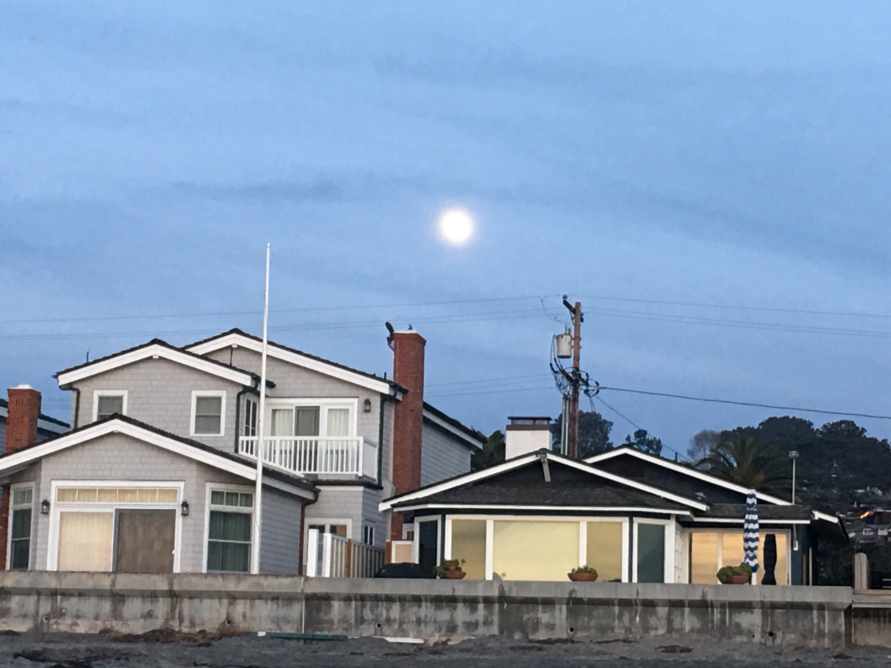

My name is Ann and I am currently a junior at School of the Art Institute of Chicago (SAIC) with the emphasis in visual communications.
On this site, I wanted to put my artwork and also reflect on the things that happened this semester with the photos I took.
Thank you for stopping by!